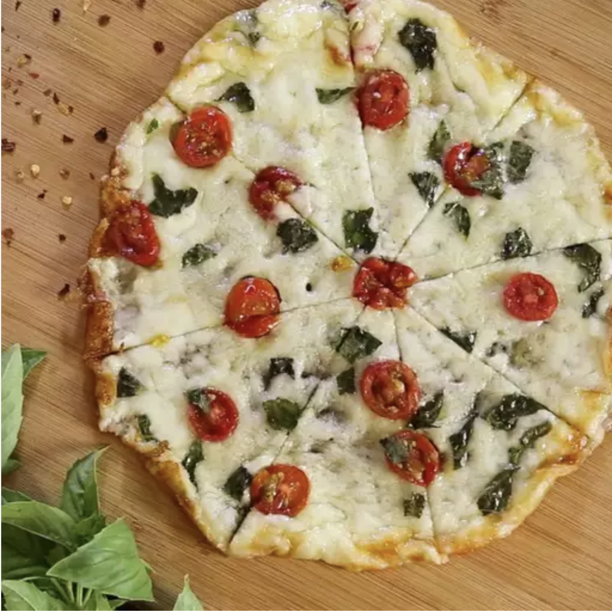

Cheesy Crust Skillet Pizza

Ingredients:
- 1 and a half cups of shredded mozzarella cheese
- 5 thinly sliced cherry tomatoes
- 2 tablespoons of torn fresh basil leaves
- 4 thinly sliced mozzarella balls
Steps:
- Heat a 10-inch non-stick skillet over medium-high heat.
- Sprinkle shredded mozzarella cheese into the skillet for 2-3 minutes, or until melted
- Arrange tomatoes, basil leaves, and mozzarella slices on the cheese
- Cook for 2-3 minutes, or until top is bubbling and edges are browned
- Remove pizza from the skillet
- Cool for 1 minute before slicing
- Enjoy!